Design Ontology Harness 기반 3-Layer 토큰 구조 적용 | 2026-04-12
| Layer | Example Token | Value | Purpose |
|---|---|---|---|
| Core | --core-neutral-50 |
#F8F6F3 | 브랜드 무관 원재료 |
| Core | --core-accent-500 |
#964F4C (Marsala) | 브랜드 액센트 원색 |
| Core | --space-4 |
12px | spacing scale (신규) |
| Core | --motion-normal |
120ms | 기본 전환 duration (신규) |
| Core | --shadow-raised |
0 1px 3px rgba(0,0,0,0.04) | 카드 elevation (신규) |
| Semantic | --surface-primary |
var(--core-neutral-50) | 주요 배경 |
| Semantic | --text-primary |
var(--core-neutral-900) | 본문 텍스트 |
| Semantic | --feedback-error-bg |
var(--core-danger-100) | 에러 배경 |
| Component | --primary (shadcn) |
var(--core-accent-500) | 버튼 primary 배경 |
| Component | --background (shadcn) |
var(--surface-primary) | 페이지 배경 |
토큰 구조만 변경하고 실제 색상값은 동일하므로 시각적 차이가 없어야 합니다.
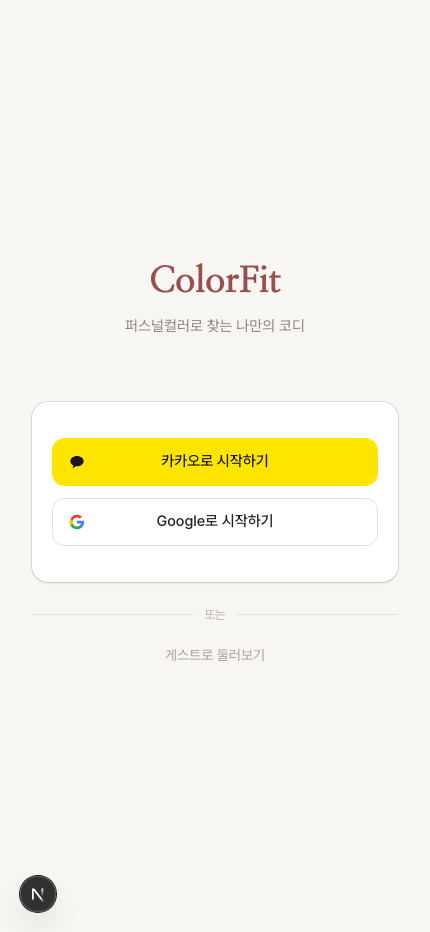
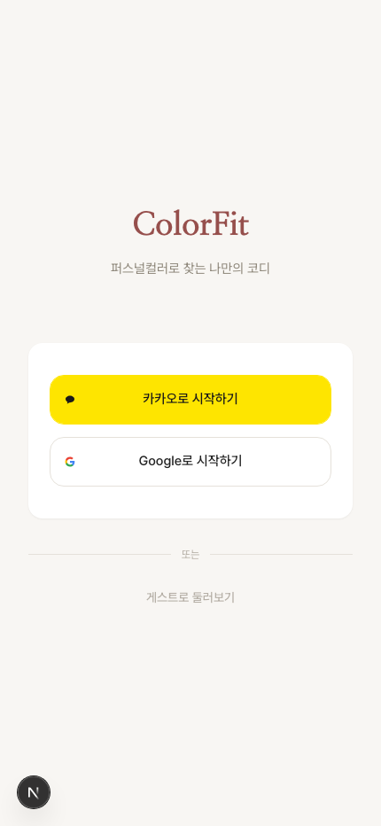
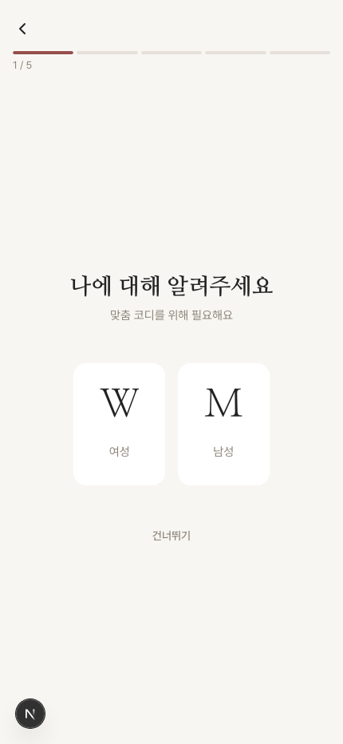
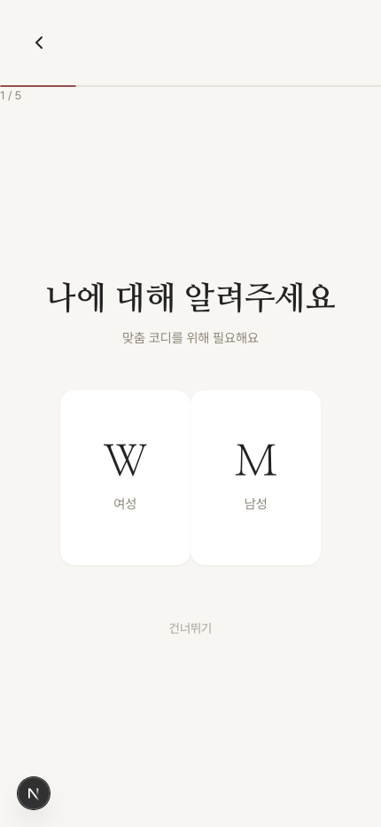
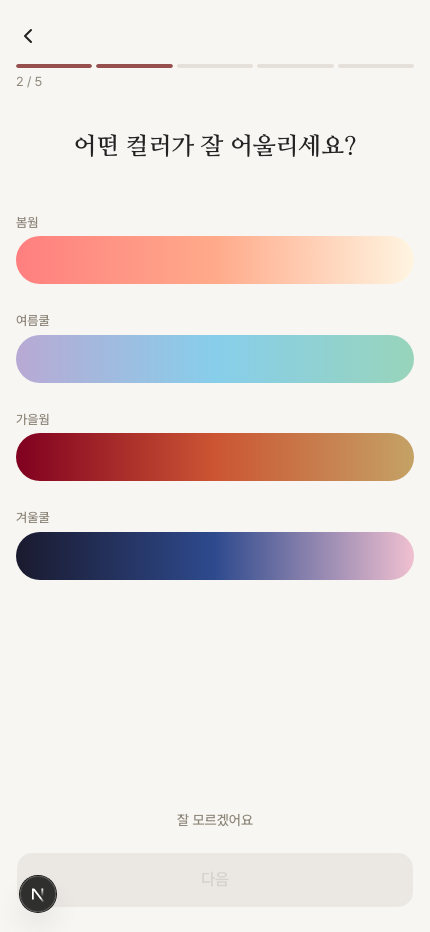
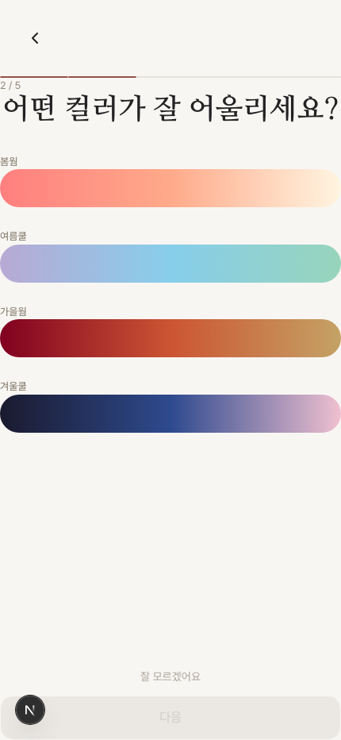
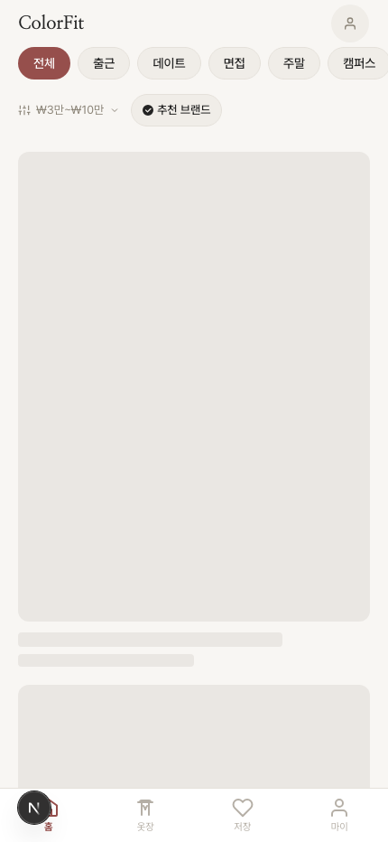
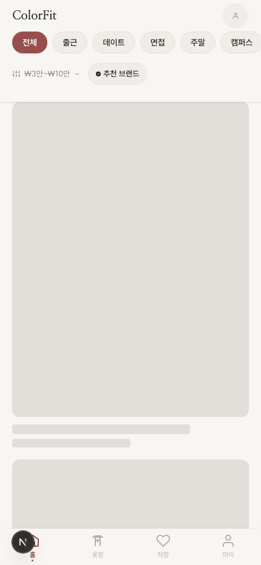
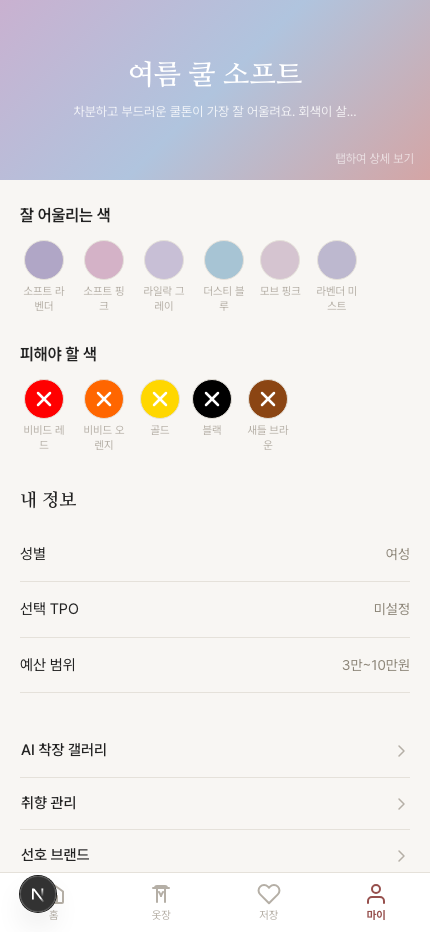
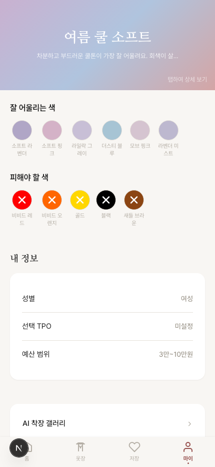
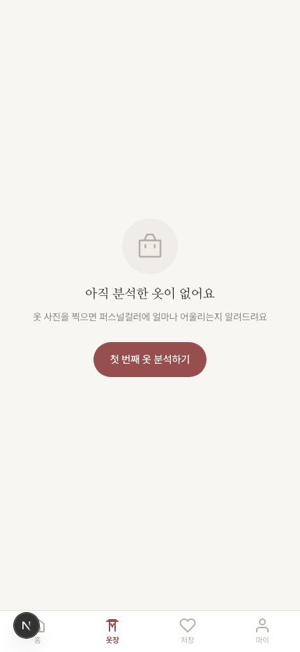
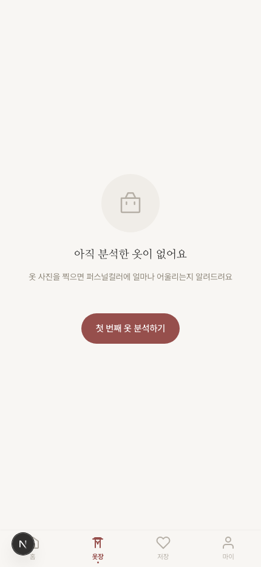
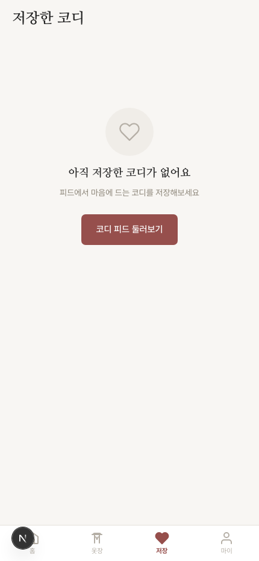
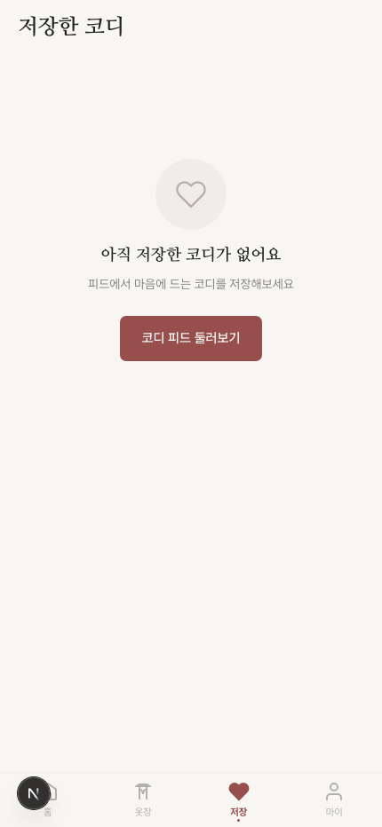
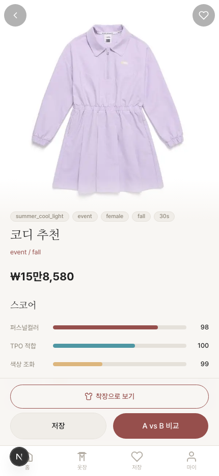
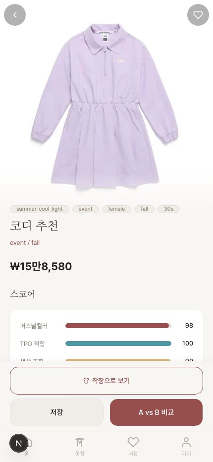
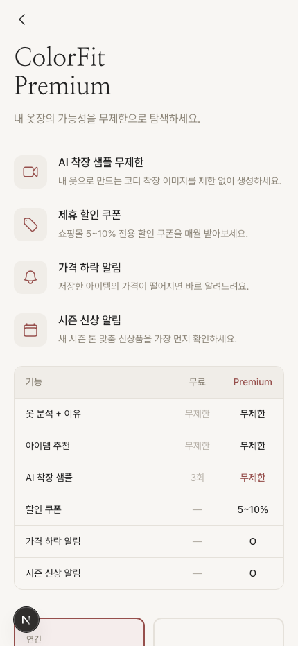
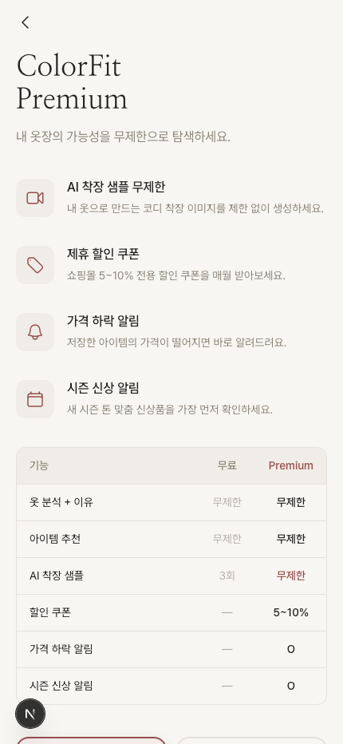